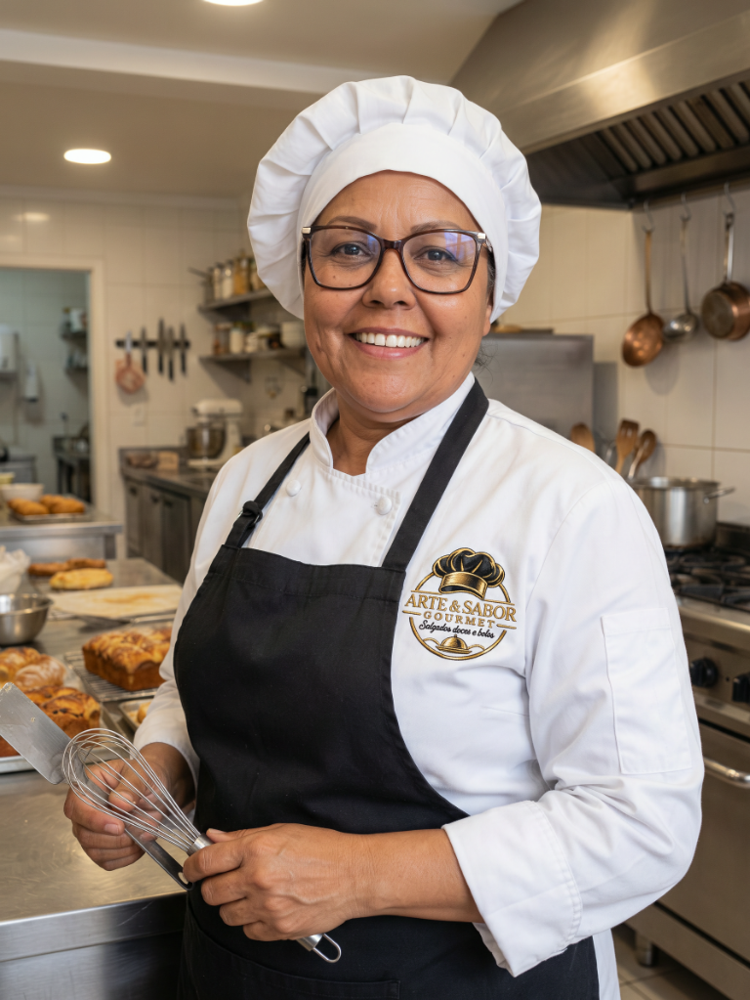

ESPECIALIDADES DA CASA
Destaques do nosso cardápio artesanal
Conheça algumas das opções mais pedidas para eventos e celebrações. Você pode combinar diferentes sabores no mesmo pedido.


Produção artesanal sob encomenda para eventos corporativos, confraternizações, festas infantis e casamentos em Curitiba e Região Metropolitana.
Do coffee break executivo à mesa completa de celebrações, com padronização, sabor e apresentação impecável.
Abra os catálogos completos em uma nova aba para consultar sabores, descrições e valores de referência.
Bruschetas, mini quiches, mini empadinhas, salgadinhos folhados, fritos, assados, mini hambúrgueres e espetinhos com valores por cento (100 un.).
Brigadeiros tradicionais, gourmet e especiais, mini mousses no copinho, mini pavês, brownies, cinnamon rolls e mini cookies (25, 50 ou 100 un.).
Conheça algumas das opções mais pedidas para eventos e celebrações. Você pode combinar diferentes sabores no mesmo pedido.

À frente da Arte & Sabor Gourmet, Milegdy une cuidado artesanal e dedicação à confeitaria. É certificada em Confeitaria Profissional pelo Instituto Nacional de Competências (INAC).
Cada preparo é pensado para levar sabor, carinho e uma apresentação especial aos momentos importantes dos seus clientes.
Confeitaria Profissional • INAC
Atendemos encomendas sociais e corporativas em Curitiba e Região Metropolitana com padronização, frescor e pontualidade.
Coffee breaks, reuniões, treinamentos e recepções empresariais com apresentação refinada e praticidade.
Combinações variadas de salgados assados, fritos e doces para celebrar com equipes, amigos e familiares.
Clássicos queridos por adultos e crianças preparados artesanalmente com ingredientes selecionados.
Salgados finos, finger foods e doces gourmet com acabamento delicado e pontualidade rigorosa.
“Encomendamos mini quiches, folhados e brigadeiros gourmet para um coffee break da empresa. Chegou tudo impecável, bem embalado e no horário exato!”
“As mini empadinhas realmente desmancham na boca e os mini mousses no copinho fizeram o maior sucesso no aniversário. Atendimento muito atencioso pelo WhatsApp.”
“Pedimos bruschetas, cinnamon rolls e doces finos para uma confraternização e superou todas as expectativas. Dá para sentir a qualidade dos ingredientes.”
Reunimos as principais informações para você solicitar seu orçamento com rapidez e tranquilidade.